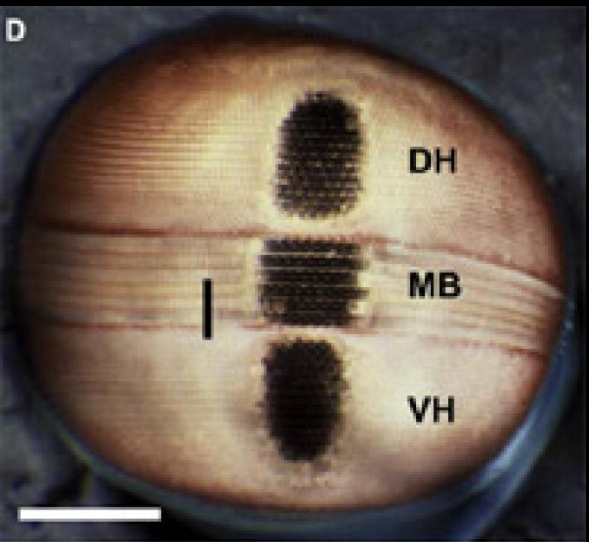
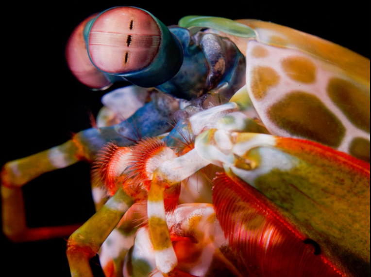
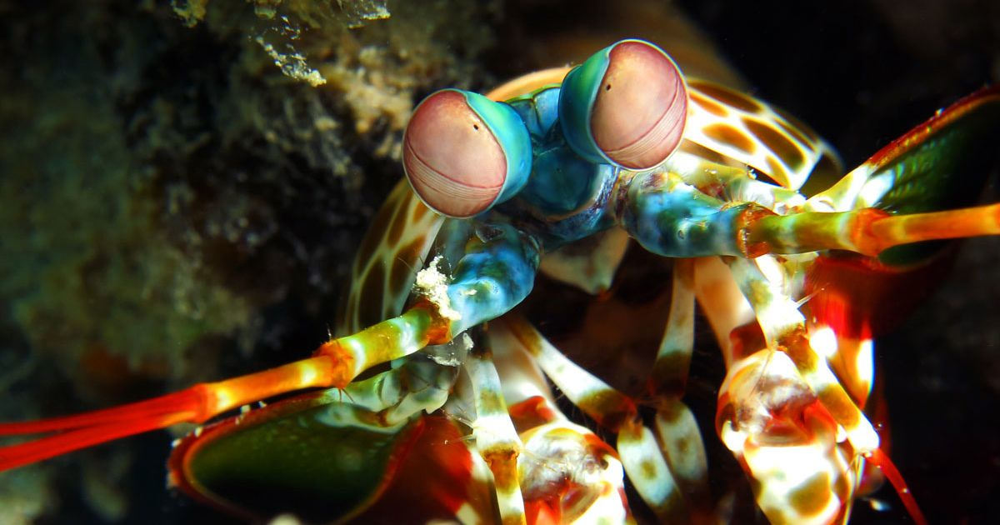

Soco a 80km/h: Conheça o Stomatopoda
Fatos sobre o Stomatopoda
Informações básicas
Nomenclatura científica
Odontodactylus scyllarus
Reino: Animalia
Filo: Crustacea
Classe: Malacostraca
Subclasse: Hoplocarida
Ordem: Stomatopoda
Família: Odontodactylidae
Género: Odontodactylus
Espécie: O. scyllarus
Reino: Animalia
Filo: Crustacea
Classe: Malacostraca
Subclasse: Hoplocarida
Ordem: Stomatopoda
Família: Odontodactylidae
Género: Odontodactylus
Espécie: O. scyllarus
Nome Polular:
Camarão-louva-a-deus-palhaçoFatos interessantes
Visão incrível
 Visão de cores excede em muito a nossa também. A seção do meio de cada olho, a banda média, consiste em seis faixas paralelas. Os quatro primeiros são carregados com oito tipos diferentes de células sensíveis à luz (fotorreceptores), contendo pigmentos que respondem a diferentes comprimentos de onda da luz. Com eles, o espectro visível do camarão mantis se estende para o infravermelho e o ultravioleta. Eles podem até usar filtros para ajustar cada fotorreceptor individual de acordo com as condições de luz locais. visão de cores excede em muito a nossa também. A seção do meio de cada olho, a banda média, consiste em seis faixas paralelas. Os quatro primeiros são carregados com oito tipos diferentes de células sensíveis à luz (fotorreceptores), contendo pigmentos que respondem a diferentes comprimentos de onda da luz. Com eles, o espectro visível do camarão mantis se estende para o infravermelho e o ultravioleta. Eles podem até usar filtros para ajustar cada fotorreceptor individual de acordo com as condições de luz locais.A quinta e seis filas da banda média contêm fotorreceptores especializados para detectar luz polarizada. Normalmente, a luz se comporta como uma onda que vibra em todas as direções possíveis enquanto se move. Em comparação, a luz polarizada vibra em apenas uma direção - pense em prender um pedaço de barbante a uma parede e sacudi-lo para cima e para baixo. Embora normalmente não percebamos isso, ele está presente no brilho que reflete na água e no vidro e usamos filtros polarizadores em óculos de sol e câmeras para filtrá-lo. A quinta e seis filas da banda média contêm fotorreceptores especializados para detectar luz polarizada. Normalmente, a luz se comporta como uma onda que vibra em todas as direções possíveis enquanto se move. Em comparação, a luz polarizada vibra em apenas uma direção - pense em prender um pedaço de barbante a uma parede e sacudi-lo para cima e para baixo. Embora normalmente não percebamos isso, ele está presente no brilho que reflete na água e no vidro e usamos filtros polarizadores em óculos de sol e câmeras para filtrá-lo.
Visão melhor que leitores de DVD
 Sua visão possue o mesmo conceito que um leitor de DVD, só que mais eficiente. Seus olhos ficam na ponta de astes e se movem independentemente um do outro. Cada olho tem "visão trinocular" - pode medir a profundidade e a distância por conta própria, concentrando-se em objetos com três regiões separadas. Eles podem ver um tipo de luz em espiral especial chamado luz polarizada circular que nenhum outro animal pode ver. E eles têm uma estrutura parecida com a tecnologia encontrada nos aparelhos de CD e DVD, mas muito mais eficaz.A maioria das pessoas tem três tipos de células de detecção de luz, ou fotorreceptores, em suas retinas. Estes são sensíveis à luz vermelha, verde e azul, respectivamente. Aves, répteis e muitos peixes têm um quarto fotorreceptor que detecta luz ultravioleta. Quatro é suficiente. Os modelos matemáticos nos dizem que você só precisa de quatro receptores, talvez cinco, para codificar efetivamente as cores dentro desse intervalo.
O camarão mantis tem doze fotorreceptores diferentes.Oito deles cobrem as partes do espectro que podemos ver, enquanto quatro cobrem a região ultravioleta. Isso parece um excesso ridículo. Se quatro ou cinco receptores são tudo o que um animal precisa, "por que diabos os estomatoópodes precisam de 12 canais?" diz Justin Marshall, que liderou o novo estudo.
Possuem o soco mais rápido do mundo.
 Em abril de 1998, uma criatura agressiva chamada Tyson esmagou a parede de vidro de sua cela de quinze centímetros de espessura. Logo foi subjugado por atendentes nervosos e mudou-se para uma instalação mais segura em Great Yarmouth. Ao contrário de seu homônimo pesado, Tyson tinha apenas dez centímetros de comprimento. Mas os cientistas descobriram recentemente que Tyson, como todos os seus parentes, pode dar um dos socos mais rápidos e poderosos da natureza. Ele era um camarão mantis.Os camarões Mantis são parentes agressivos de caranguejos e lagostas e atacam outros animais, aleijando-os com golpes devastadores. Suas armas secretas são um par de braços articulados dobrados sob a cabeça, que eles podem desdobrar em velocidades incríveis.
As espécies "lanceiras" têm braços terminando em um espigão diabólico e farpado que eles usam para empalar presas de corpo mole como peixes. Mas as espécies maiores de 'esmagadores' têm braços terminando em porretes pesados e os usam para dar socos com a mesma força que uma bala de rifle.
Referências bibliográficas:
National GeographicWikipédia